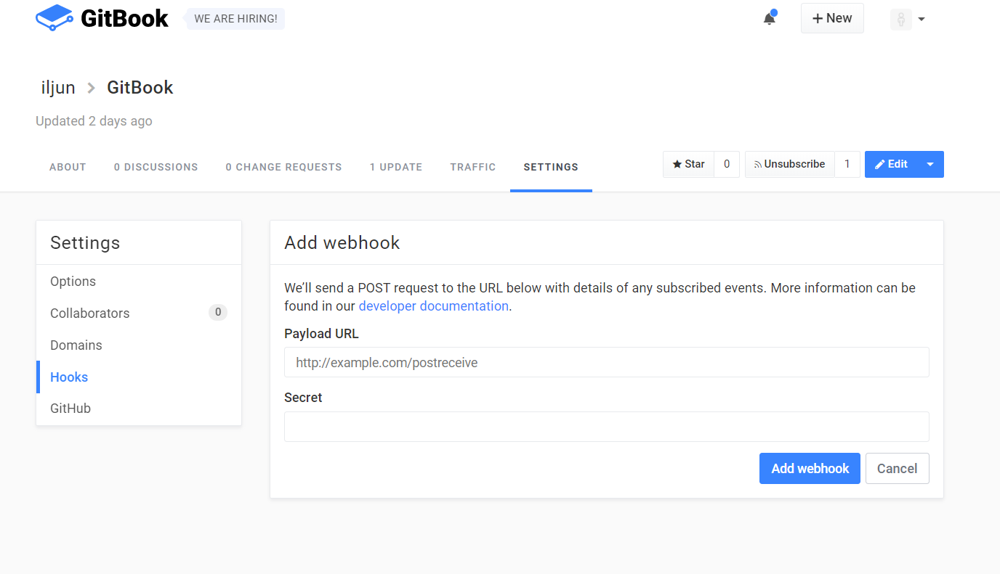

WebHook 기능
gitbook.com에서 Webhook 기능을 설정할 수 있습니다.
아래와 같은 화면에서

특정한 이벤트 때 Webhook을 받을 URL을 설정 가능합니다.
이벤트가 발생했을때만 Webhook 기능 활성화가 가능합니다.
특정한 이벤트란 4가지가 존재합니다.
| 이벤트 | 설명 |
|---|---|
| All | 이벤트 발생 시 언제나 reqeust 전송 |
| Publish | puslbish됐을 때 reqeust 전송 |
| thread | Discussion이 열리거나 닫혔을 때 또는 다시 열렸을 때 reqeuest전송 |
| thread_comment | Discussion이나 pullRequest에 comment가 달렸을 때 request전송 |
Webhook이 전송될때 HttpHeader에 포함되어 전송되는 값
Webhook은 post의 형태로 전달받습니다.
| RequestHeader | 설명 |
|---|---|
| X-GitBook-Event | 이벤트명 |
| X-GitBook-Signature | secret 키를 설정한 경우 HMAC 방식으로 인코딩되어 전송됩니다. |
| X-GitBook-Delivery | Request의 고유한 ID가 전송됩니다. |